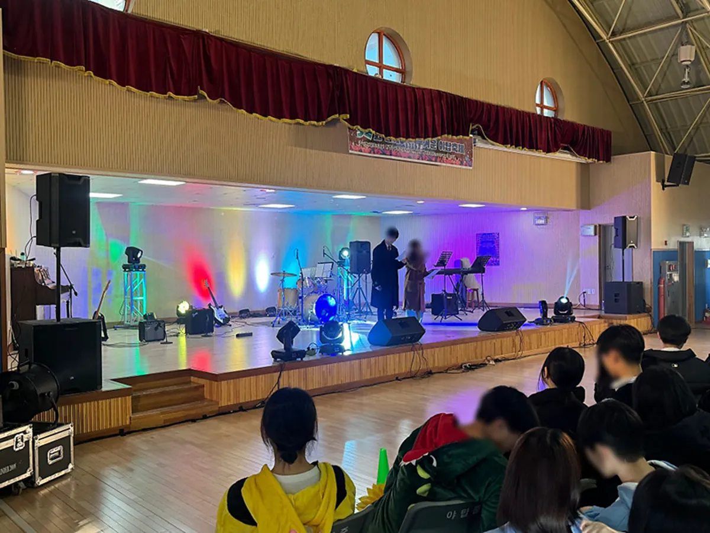
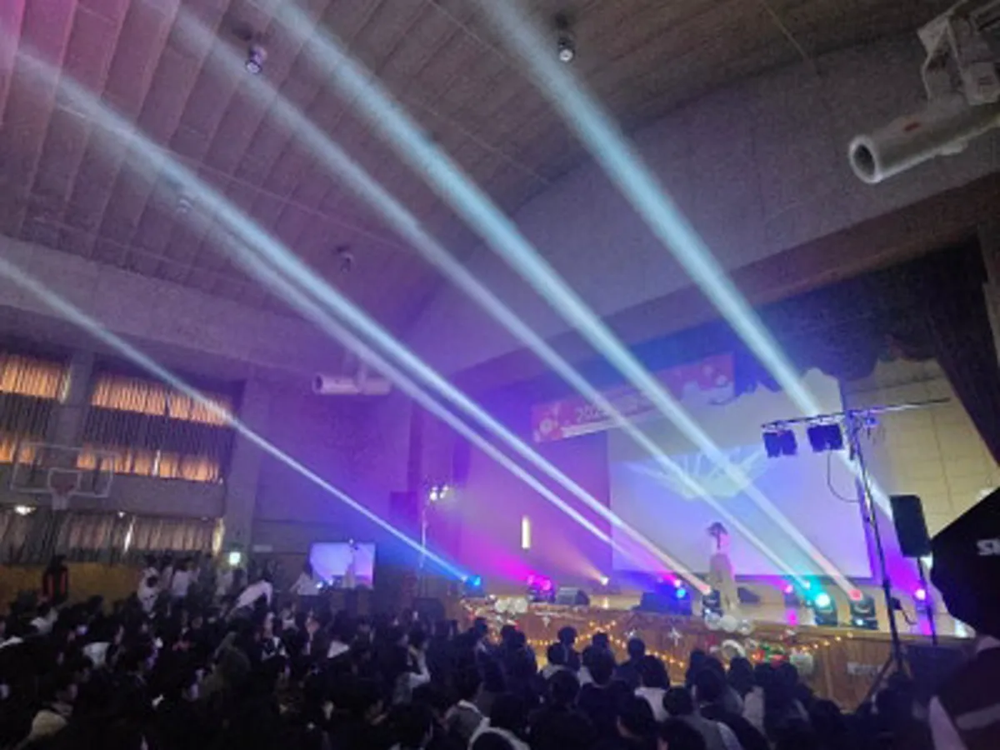

강남 행사 MC 섭외는 이름값보다 행사 성격과 진행자의 강점이 맞는지가 먼저입니다. 격식 있는 시상식에 레크리에이션형 진행자를 세우거나, 체육대회에 아나운서형 진행자를 세우면 둘 다 아쉬워집니다. 이 글은 진행자를 고르는 기준과, 섭외가 정해진 뒤 담당자가 넘겨야 할 자료 · 대본 · 리허설 순서를 정리했습니다. 프로이벤트 서울본사는 강남구 역삼동 778-3 에 있고, 서울 어디든 본사에서 출발합니다.

- 진행자는 행사 성격(격식 · 참여 · 웃음 · 강연)에 맞춰 고릅니다.
- 섭외가 정해지면 큐시트 · 참석자 구성 · 호명 명단 · 금지 표현을 한 번에 넘깁니다.
- 리허설은 마이크 · 음악 신호 · 무대 동선 세 가지를 진행자와 함께 맞춥니다.
- 기획한 사람과 진행하는 사람이 소통이 잘될수록 큐시트가 어긋나지 않습니다.
1. 강남 행사 MC 섭외, 행사 성격부터 정합니다
진행자를 고르기 전에 이번 행사가 어떤 분위기여야 하는지를 한 줄로 적어 보세요. 「격식 있게, 실수 없이」인지, 「다 같이 움직이게」인지, 「크게 웃게」인지에 따라 맞는 진행자가 다릅니다. 프로이벤트가 섭외하는 진행자는 크게 네 갈래입니다.
| 진행자 | 잘 맞는 행사 | 강점 |
|---|---|---|
| 전문 MC | 기념식 · 시상식 · 송년회 · 창립행사 | 식순 관리, 호명 · 의전 진행 |
| 레크리에이션 강사 | 워크샵 · 체육대회 · OT · 수련회 | 참여 유도, 팀 게임 진행 |
| 개그맨 · 방송인 | 송년회 · 페스티벌 · 가족행사 | 웃음, 이름이 주는 기대감 |
| 강사 · 강연 | 워크샵 · 교육 행사 | 주제 전달, 강연형 프로그램 |
한 행사 안에서도 순서마다 필요한 진행이 다를 수 있습니다. 1부 시상은 전문 MC가, 2부 레크리에이션은 레크리에이션 강사가 맡는 식으로 나누기도 합니다. 개그콘서트처럼 웃으면서 듣는 강연형 프로그램도 구성할 수 있습니다.
2. 진행자에게 넘길 자료 다섯 가지
진행자가 행사장에 와서 처음 큐시트를 보면 실수가 생깁니다. 섭외가 정해지면 아래 다섯 가지를 한 번에 정리해 넘기세요. 행사 일주일 전이 적당하고, 바뀐 내용은 사흘 전까지 다시 보냅니다.
- 큐시트: 시간 · 순서 · 담당 · 음악 · 화면이 한 줄씩 적힌 표.
- 참석자 구성: 회사 · 부서 성격, 연령대, 외국인 참석 여부.
- 호명 명단: 내빈 · 수상자 이름과 직함, 읽는 법 표시.
- 꼭 넣을 말 · 피할 말: 회사 이름 표기, 사내 용어, 피해야 할 농담 주제.
- 비상 연락: 담당자 휴대폰, 순서가 바뀔 때 신호를 주는 방법.
3. 대본은 진행자 말투로, 의전 부분만 정확하게
대본을 처음부터 끝까지 써서 넘기면 진행자의 말이 딱딱해집니다. 개회 선언, 내빈 소개, 시상 호명처럼 틀리면 안 되는 부분만 정확한 문장으로 적고, 나머지는 진행자가 자기 말투로 이어 가게 두는 편이 자연스럽습니다.
| 부분 | 적는 방법 |
|---|---|
| 개회 · 폐회 선언 | 문장 그대로 (행사 이름 정식 명칭) |
| 내빈 소개 | 순서 · 직함 · 이름 그대로 |
| 시상 호명 | 상 이름 · 부서 · 이름 그대로 |
| 레크리에이션 · 게임 | 목표와 시간만 (진행은 진행자에게) |
| 공연 소개 | 팀 이름 · 곡 수 · 길이 |

4. 리허설에서 맞출 세 가지
리허설은 길게 할 필요가 없지만, 진행자와 음향 담당이 함께 있어야 합니다. 아래 세 가지만 맞춰도 당일 실수가 크게 줄어듭니다.
- 마이크: 진행자용 무선 마이크와 예비 마이크, 내빈 · 시상자용 마이크를 정하고 소리를 들어 봅니다.
- 음악 신호: 입장 · 시상 · 공연 전환 음악을 언제 틀고 끄는지, 진행자의 어떤 말이 신호인지 정합니다.
- 무대 동선: 진행자 자리, 시상자가 올라오는 계단, 사진 찍는 위치를 바닥에 표시합니다.

5. 기획과 진행을 한 팀이 맡으면 좋은 점
프로이벤트 대표 배광길은 전문 MC입니다. 기획한 사람이 마이크를 잡으면 큐시트의 의도가 진행에 그대로 담기고, 순서가 바뀌어도 그 자리에서 이어 붙일 수 있습니다. 진행자를 따로 섭외할 때도 음향 · 조명 · 무대를 같은 팀이 운영하면 신호가 하나로 모입니다. 프로이벤트는 음향 · 조명 · 무대 · LED 를 자체 장비와 자체 인력으로 세팅합니다.
강남 행사는 서울본사에서 바로 출발하므로 리허설 시간을 본행사 직전에 따로 잡기 쉽습니다. 송년회 시즌에는 진행자 일정이 먼저 차니, 날짜가 정해지면 섭외부터 확정하는 것을 권합니다. 송년회 준비 전체는 강남 송년회 행사 글에 정리했습니다.
6. 섭외 견적 항목
섭외 견적은 진행자 종류와 진행 시간, 함께 쓰는 장비에 따라 달라집니다. 자동 견적서에서 항목을 골라 보내 주시면 담당자가 확인 후 1영업일 안에 1차 제안과 견적으로 답합니다.
| 항목 | 확인할 것 |
|---|---|
| 전문 MC | 진행 시간, 의전 순서 유무 |
| 레크리에이션 강사 | 참여 인원 구성, 게임 종류 |
| 개그맨 · 방송인 | 출연 시간, 무대 순서 |
| 가수 · 아이돌 그룹 | 곡 수, 리허설 시간 |
| 강사 · 강연 | 주제, 강연 시간 |
| 음향 (소형) | 진행자 마이크 · 배경 음악 |
강남 지역 안내는 강남 행사 안내에서 보실 수 있습니다.
자주 묻는 질문
진행자만 섭외할 수 있나요?
진행자만 필요한 경우도 상담할 수 있습니다. 견적서의 섭외 항목만 골라 문의해 주세요.
원하는 연예인이 있는데 섭외가 되나요?
출연 여부는 그 연예인의 일정과 조건에 따라 달라 확답을 드릴 수 없습니다. 행사 규모와 예산에 맞춰 후보를 제안합니다.
레크리에이션 강사와 MC는 무엇이 다른가요?
MC는 식순과 의전을 정확하게 이끄는 데, 레크리에이션 강사는 참가자를 움직이게 하는 데 강점이 있습니다. 행사 안에서 순서별로 나눠 맡기기도 합니다.